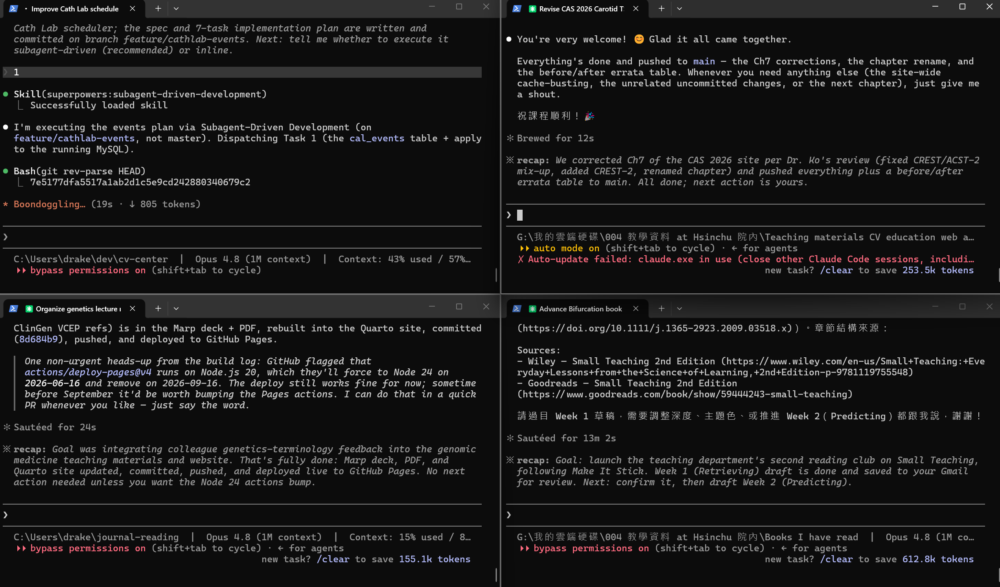

WHY
文獻供給 ≫ 人類閱讀速度
文獻供給 ≫ 人類閱讀速度
我的 AI 工具演進史
agent + 外接資料庫
把 Claude 當研究助理
把投影片磨亮
ISAR-REACT 5 等三例
| 面向 | 傳統做法 | AI 時代做法 |
|---|---|---|
| 搜尋 | 手動 Boolean query，反覆試 | 自然語言描述問題，AI 迭代優化 |
| 篩選 | 一篇篇看標題與摘要 | 批次相關性評分 + 關鍵句擷取 |
| 閱讀 | 單篇深讀，耗時數小時 | 跨篇 synthesize，保留 citation |
| 整理 | 手動做表格、手寫 summary | 結構化表格 + 自動 citation export |
| 教學 | 做 slides → 另一輪工作 | 同一 workflow 自動產出講義 + 投影片 |
直接在電腦上操作，存檔、推 Git
PubMed · Semantic Scholar · CT.gov · ClinPGx
搜尋→閱讀→整理→投影片→郵件 全自動

| MCP Server | 功能 | 在 Efient 範例的角色 |
|---|---|---|
| PubMed | 3,600 萬筆生醫文獻 | ISAR-REACT 5、TROPICAL-ACS 全文檢索 |
| Semantic Scholar | 2 億篇 + citation graph | 找 prasugrel 領域 key papers / h-index |
| bioRxiv / medRxiv | 預印本 | 最新 ACS guideline、機轉研究 |
| ClinicalTrials.gov | 註冊試驗資料 | 確認 NCT、追進行中試驗 |
| ClinPGx (PharmGKB) | CYP2C19 / 藥物基因 | 解讀 prasugrel vs clopidogrel 在 LOF 病人 |
| Zotero | 書目管理 | 匯出 BibTeX、整理 citation |
| Gmail / Calendar / GitHub | 工作流自動化 | 草稿 email、行事曆、版本控管 |
| 維度 | MCP | Skills |
|---|---|---|
| 本質 | 工具（資料來源、API） | 流程（方法論、SOP） |
| 比喻 | USB 接口 | SOP 手冊 |
| 範例 | PubMed MCP、Gmail MCP | literature-review、citation-management |
| 誰寫 | Anthropic + 社群 + 自己 | Anthropic + 領域專家 |
| 何時呼叫 | 需要外部資料時 | 進入特定 workflow 時 |
| 對醫師意義 | 拓展能接觸的資料 | 確保用對的方法做事 |
PRISMA 式系統性搜尋 → ISAR 系列 + de-escalation
Vancouver / DOI / PubMed link → 30 篇清單
段落式醫學寫作（不只 bullet）
病人分層 → Prasugrel 選藥流程
Trial / case 結構化 → TRITON-TIMI 38
HR / CI / NNT / non-inferiority
KM 曲線、forest plot（出版級）
進階 PubMed / MeSH 重寫
CYP2C19 LOF → clopidogrel 失效
| Trial | 關鍵統計概念 | Skill 做什麼 |
|---|---|---|
| ISAR-REACT 5 | HR 1.36 (1.09–1.70) | 解釋 ITT vs PP；計算 NNT |
| TROPICAL-ACS | Non-inferiority margin 30% | 解非劣性檢定閾值意義 |
| HOST-REDUCE | 2×2 factorial | 解 factorial design |
少用「好的」「漂亮的」抽象詞
切成 Goal / Context / Format / Constraint
每輪只改一個面向
| 元素 | ISAR-REACT 5 例 |
|---|---|
| P Population | ACS 病人，計畫 invasive |
| I Intervention | Prasugrel 60→10 mg |
| C Comparator | Ticagrelor 180→90 mg BID |
| O Outcome | Death/MI/stroke @ 12m |
| 場景 | ❌ 壞 | ✅ 好 |
|---|---|---|
| 找文獻 | 找 prasugrel 的論文 | 用 literature-review 找 2019–2026 ACS prasugrel RCT，PRISMA flow，含 PMID |
| 做表格 | 做個比較表 | Marp 表格，欄位：Trial、N、Design、1° Endpoint、HR(CI)、Bleeding；4 列 |
| 改投影片 | 這張不好看，改一下 | 拆成兩張；第一張只放數據、第二張放臨床啟示，每張 ≤ 6 行 |
| 寫結論 | 下個結論 | 以 fellow 角度寫 2 句臨床啟示；不要超出原文 |
| # | 主題 | 核心試驗 | 學習目標 |
|---|---|---|---|
| 1 | Head-to-head | ISAR-REACT 5 (NEJM 2019) | 一篇 RCT 的完整 AI 拆解 |
| 2 | De-escalation | TROPICAL-ACS · TOPIC · HOST-REDUCE | 跨試驗 synthesize；non-inferiority |
| 3 | Special Populations | ELDERLY-ACS 2 · POPular AGE | 把證據轉成 CDS；亞洲族群 |
| N | 4,018（Prasugrel 2,006；Ticagrelor 2,012） | HR | 1.36 (95% CI 1.09–1.70), p = 0.006 |
| Population | ACS (STEMI/NSTEMI/UA), invasive | MI | 4.8% vs 3.0% |
| Design | Multicenter RCT, open-label | Stroke | 1.1% vs 1.0% (no diff) |
| Primary | Death/MI/stroke @ 1y | BARC 3-5 | 5.4% vs 4.8% (p=0.46, NS) |
| Result | Ticagrelor 9.3% vs Prasugrel 6.9% | Stent thromb. | 1.3% vs 1.0% |
| Trial | N | Comparator | 1° Endpoint | Result | Bleeding |
|---|---|---|---|---|---|
| ISAR-REACT 5 (NEJM 2019) | 4,018 | Prasugrel vs Ticagrelor | CV death/MI/stroke 1y | 6.9% vs 9.3% (HR 1.36, p=0.006) | BARC 3-5 NS |
| TRITON-TIMI 38 (NEJM 2007) | 13,608 | Prasugrel vs Clopidogrel | CV death/MI/stroke ~14m | 9.9% vs 12.1% (HR 0.81, p<0.001) | TIMI major ↑ (2.4% vs 1.8%) |
| 試驗 | 策略 | 引用 |
|---|---|---|
| TROPICAL-ACS (Lancet 2017) | PFT-guided de-escalation | PMID 28855078 |
| TOPIC (EHJ 2017) | 1m 後固定切 clopidogrel | Cuisset T et al. |
| HOST-REDUCE (Lancet 2020) | Prasugrel 10→5 mg 降劑量 | PMID 32882163 |
| Trial | N | 策略 | 1° Endpoint | Result | 結論 |
|---|---|---|---|---|---|
| TROPICAL-ACS | 2,610 | PFT-guided | NCB @ 1y | 7% vs 9% HR 0.81 (0.62–1.06) | Non-inferior (p_NI=0.0004) |
| TOPIC | 646 | 1m 切 clopidogrel | BARC ≥2 bleeding | 4.0% vs 14.9% HR 0.30, p<0.01 | Bleeding ↓; ischemic 不變 |
| HOST-REDUCE | 2,338 | Prasugrel 10→5 mg | NCB @ 1y | 7.2% vs 10.1% HR 0.70 (0.52–0.92) | Superior (p=0.012) |
| ELDERLY-ACS 2 · Circ 2018 | Pra 5mg | Clopi |
|---|---|---|
| Primary composite | ~17.0% | ~16.6% (HR 1.007, NS) |
| BARC ≥2 bleeding | 4.1% | 2.7%（numerically ↑） |
| N=1,002 · ≥70y | Clopi | Potent (mainly ticagrelor) |
|---|---|---|
| PLATO major/minor bleeding | 18% | 24% (HR 0.71, p=0.02) |
| NCB | 28% | 32% (non-inferior, p=0.03 NI) |
| Claude 自動補上的 evidence |
|---|
| PRASFIT-ACS（Saito, Circ J 2014）：日本人 3.75 mg vs clopidogrel |
| HOST-REDUCE（PMID 32882163）：韓國人 5 mg de-escalation |
ISAR-REACT 5 支持 prasugrel
POPular AGE 支持 clopidogrel
降階（3.75 mg 或 1m de-escalation）
1m 後切藥（TROPICAL / TOPIC / HOST-REDUCE）
用 PICO + GCFC 結構描述問題
結果不滿意 → 要求調整策略
同時用 PubMed 與 Semantic Scholar
指定時間範圍，避免舊資料淹沒新證據
請 Claude 用 MeSH 重寫 query
HR、p、N 一律對照原文
好用的存進 CLAUDE.md
literature-review 比手寫 prompt 穩定
偶爾 hallucinate 不存在的 PMID/DOI → 每個連結自己點一次；用 citation-management
Neutral trial 常被誤判 positive（POPular AGE NCB non-inferiority）→ 讀 full text、看 NI margin
它能產出「像專家」的文字，但臨床解讀必須是你自己的判斷
HIPAA / 個資法 → 用 Claude for Work 或地端；identifier 絕不進入公開 AI
| 類型 | 具體例子（Efient 相關） | 防範方法 |
|---|---|---|
| 假 citation | 編出一個 PMID，文章不存在 | 點開 PubMed link 驗證 |
| 錯 N 或 % | 把 N=4,018 寫成 4,800 | 對照原文 abstract |
| 誤判顯著性 | 把 BARC p=0.46 寫成「ticagrelor 更易出血」 | 讀 full text 的 primary result |
| 誤植作者 | Schüpke 寫成 Schunkert | 核對第一 / 通訊作者 |
| 過度推論 | 從 ISAR-5 推到 medically-managed ACS | 自己判斷 study population |
PMC open-access 可自由下載；非 OA 需機構訂閱，Claude 無法跳過 paywall
教學自用 OK；對外分享註明「AI 協助整理，僅供教學參考」；投稿依期刊政策揭露
每份 handout 底部：謝慕揚 MD, PhD, FESC — 讀書會共筆整理
不需要學 CLI，瀏覽器就能用
例如：每週把當期 Circulation 的 ACS 文章整理成中文
literature-review + citation-management 兩個就夠你撐很久
先把 prasugrel 的 7 個試驗串起來；之後延伸 ticagrelor、cangrelor、DOAC
解鎖完整 agent workflow，把 prompt 寫進 CLAUDE.md
| 資料夾 | 主題 | 產出 |
|---|---|---|
| 01-ischemic-heart-disease/ | ACS, STEMI, PCI, Antiplatelet | 25+ |
| 04-valvular-disease/ | TEER, TAVI | 15+ |
| 10-icu-general/ | ICU biweekly | 30+ |
| 91-podcast-journal-review/ | 每週期刊回顧 | 50+ |
Multimodal MCP 分析 ECG/Echo/Angio · Long-context 一次讀完 ESC guideline · Local LLM 病人資料地端
AI-assisted CDS 即時選藥（CYP2C19+age+BW）· Peer review 自動結構化 · 虛擬研究助理
AI 處理可自動化的搜尋・閱讀・整理；醫師專注臨床決策・病人溝通・教學